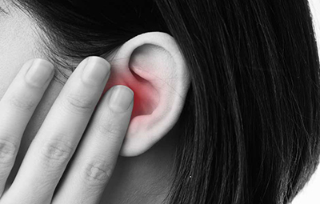
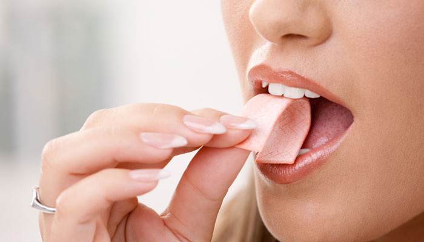

|  | လေဖိအားအပြောင်းအလဲကြောင့်နားစည်ရောင်ရမ်းခြင်းလေဖိအားအပြောင်းအလဲကြောင့်နားစည်ရောင်ရမ်းခြင်းကို လေယာဉ်အတက်အဆင်းလုပ်တဲ့အခါ၊တောင်ပေါ်တောင်အောက်ကားနဲ့အတက်အဆင်းလုပ်တဲ့အခါ၊ရေအောက်ထဲရေငုပ်တဲ့အခါတွေမှာ ခံစားရနိုင်ပါတယ်။လေဖိအားအပြောင်းအလဲကြောင့် နားစည်ရောင်ရမ်းခြင်းဖြစ်တာကို ဆေးပညာအရ Aeroplane ear သို့မဟုတ် ear barotrauma သို့မဟုတ် barotitis media လို့ခေါ်ပါတယ်။ |
|  | ပီကေ မျိုချမိရင် စိုးရိမ်ရသလား ?ပီကေ ကို အင်္ဂလိပ်လို Chewing gum လို့ခေါ်ပါတယ်။ပီကေပေါ်ခဲ့တာဟာ နှစ်ရာချီကြာခဲ့ပါပြီ။ပီကေဟာ စားစရာ သောက်စရာ တခုမဟုတ်ဘဲ အပျင်းပြေ ဝါးစရာ အရာတခုသာဖြစ်ပါတယ်။ဝါးပြီး အချိန်တခုကြာတဲ့အခါ ထွေးထုတ်ပစ်ဖို့လိုပါတယ်။ |
|
|
အနှိပ်ခံခြင်းဖြင့် ဖြစ်လာနိုင်သည့် ကောင်းကျိုး ဆိုးကျိုးများယနေ့ခေတ်လူနေမှုပုံစံကို ပြောရရင် အများစုဟာ ကိုယ်လက်လှုပ်ရှားမှုနည်းပြီး အထိုင်များလာကြပါတယ်။ ဖုန်းတွေ၊ အင်တာနက်တွေ ပေါပေါများများပေါ်လာပြီး နောက်ပိုင်းမှာ ပိုအထိုင်များလာကြပါတယ်။ |

|
အရက် လုံးဝမသောက်သင့်တဲ့ အချိန် ၁၀ မျိုး၁။ပိုးသတ်ဆေးတွေ သောက်နေရတဲ့အချိန်Cefotetan ၊ Metronidazole နဲ့ Tinidazole အစရှိတဲ့ဆေးတွေ သောက်နေရတဲ့အချိန်မှာ အရက်သောက်မိရင် ခေါင်းအလွန်အမင်းကိုက်တာ၊ ကိုယ်လက်မျက်နှာတွေနီရဲပြီး တဖိန်းဖိန်းတရှိန်းရှိန်းဖြစ်တာ၊ ခေါင်းမူးတာ၊အော့အန်တာ၊သွေးခုန်နှုန်းမြန်တာစတဲ့ ပြဿနာတွေ ကြုံရနိုင်ပါတယ်။Doxycycline နဲ့ Linezolid စတဲ့ ဆေးတွေဟာလည်း အရက်သောက်ထားတဲ့အချိန်နဲ့ နီးကပ်ပြီးသောက်ရင် အာနိသင်ထင်သလောက် မပြနိုင်ပါဘူး။ဒါတွေကလွဲလို့ လက်ရှိအချိန်ထိတော့ အရက်ဟာ ပိုးသတ်ဆေးအများစုနဲ့ ဘာပြဿနာမှ သိပ်မရှိတတ်ပါဘူး။ဒါပေမဲ့ သိထားဖို့လိုတာတခုက အရက်အလွန်သောက်ခြင်းဟာ ခုခံအားစနစ်ရဲ့တုံ့ပြန်မှုကို နှေးကွေးစေပြီး ပိုးသတ်ဆေးသောက်သည်ဖြစ်စေ မသောက်သည်ဖြစ်စေ စေပြီး ရောဂါပိုးတွေ ဝင်လာတဲ့အခါ ခုခံနိုင်ဖို့ခက်ခဲစေပါတယ်။ |

|
အခုချက်ချင်း လိမ္မော်သီး စားချင်စိတ်ဖြစ်သွားစေမယ့် အချက် ၇ ချက်လိမ္မော်သီးဟာ လူကြိုက်များသော အသီးအနှံတွေထဲက တမျိုးဖြစ်ပါတယ်။ဈေးလည်းသိပ်မကြီးသလို ဝယ်ရလည်းလွယ်ပါတယ်။ရာသီမရွေးလည်း ဝယ်လို့ရပါတယ်။ လိမ္မော်သီးဟာ အခွံခွာရလွယ်ပြီး စားရလွယ်ပါတယ်။ လိမ္မော်သီးအခွံကို ဓါးမလိုဘဲ လက်နဲ့အလွယ်တကူခွာလို့ရပါတယ်။အခွံခွာလိုက်ရင် အထဲမှာ အမြှောင်းလိုက်အမြှောင်းလိုက်အမွှာလေးတွေတွေ့ရပါမယ်။ လိမ္မော်သီးရဲ့ အရသာက ချဉ်၊ချို အရသာဖြစ်ကာ ခံတွင်းရှင်းပြီးစားကောင်းတဲ့အတွက် လူကြီးလူငယ်မရွေး လိမ္မော်သီးကို နှစ်ခြိုက်စွာ စားသုံးကြပါတယ်။ |

|
မနက်ခင်းရေချိုးခြင်းဖြင့် ရရှိနိုင်တဲ့ ကျန်းမာရေးကောင်းကျိုးများရေချိုးတာဟာ တကိုယ်ရည်သန့်ရှင်းဖို့အတွက်သာမက ကိုယ်ကျန်းမာဖို့ စိတ်ကျန်းမာဖို့အတွက်ပါ အရေးကြီးတဲ့အရာ ဖြစ်ပါတယ်။ ကျွန်တော်တို့ အတော်များများအနေနဲ့ ရေချိုးတဲ့အခါ မနက်ခင်းချိုးကြတာ နဲပါတယ်။ အများစုအနေနဲ့က ညနေအလုပ်ကအပြန်၊ ကျောင်းကအပြန်မှ ရေချိုးလေ့ရှိကြပါတယ်။ |

|
နားအူနေပြီဆိုရင် ဘာတွေဖြစ်နိုင်သလဲ ???????နားအူခြင်းဝေဒနာဟာ လူအတော်များများကြုံတွေ့ရနိုင်တဲ့ ဝေဒနာတမျိုး ဖြစ်ပါတယ်။ လေ့လာချင်တွေအရ အယောက်တရာမှာ ၁၅ ယောက်ကနေ အယောက်၂၀ လောက်ထိ နားအူခြင်း ဝေဒနာ ခံစားရနိုင်ခြေရှိကြောင်း သိရပါတယ်။ နားအူတယ်ဆိုတာဟာ ပြင်ပမှာတကယ်ဖြစ်နေတဲ့ အသံမရှိဘဲနဲ့ မိမိနားထဲမှာ ဆူညံသံတွေကြားနေရခြင်းဖြစ်ပါတယ်။ |
ရေနွေးနဲ့ ရေချိုးခြင်းဟာ သင့်ကျန်းမာရေးအတွက် ကောင်းပါသလားတနေကုန် ထိုင်လိုက်ထလိုက်နှင့် ပင်ပင်ပန်းပန်းအလုပ်လုပ်ပြီး ပြန်လာသော အချိန်များနှင့် ရာသီဥတု အေးသဖြင့် တနေကုန် ချမ်းချမ်းစီးစီးနေရသည့် အချိန်များတွင် ရေနွေးနွေးလေးဖြင့် ရေချိုးလိုက်လျှင် တကိုယ်လုံးရှိ အကြောအချဉ်များ ပြေလျော့ သွားပြီး အညောင်းအညာများ သက်သာသွားနိုင်သည်ကို ရေနွေးဖြင့် ရေချိုး ဖူးသူတိုင်း သတိထားမိကြသည်။ အထူးသဖြင့် ယခုအချိန်ကဲ့သို့ ရာသီဥတုအေးသော ကာလများတွင် ရေနွေးဖြင့် ရေချိုးခြင်းဖြင့် အညောင်းအညာ ပြေနိုင်စေနိုင်ရုံ သာမက အထွေထွေကျန်းမာရေး ပြဿနာများအတွက်လည်း များစွာအကျိုးဖြစ်ထွန်း စေနိုင်သည်။ သို့ရာတွင် ရေပူ၊ ရေနွေးဖြင့် ရေချိုးခြင်းဖြင့် ကျန်းမာရေးအတွက် ကောင်းကျိုးများ ရှိနိုင်သလို အချို့သော နောက်ဆက်တွဲ ပြဿနာများလည်း ရှိသဖြင့် မည်သူမဆို သိထားသင့်သော ရေနွေးဖြင့် ရေချိုးခြင်းနှင့်ဆိုင်သည့် ကျန်းမာရေး အချက်အလက် များကို ဖော်ပြပေးလိုက်သည်။ |
ဆံကေသာ မပျက်စီးအောင် ရှောင်ရမယ့် အမူအကျင့်များဆံပင်ဆိုတာဟာ လူတယောက်ရဲ့ဒုတိယမျက်နှာပါ။ ရုပ်ထွက်ကောင်းခြင်း မကောင်းခြင်းဟာ ဆံပင်ကောင်းခြင်း၊ မကောင်းခြင်း၊ ပါးခြင်း၊ ထူခြင်းတွေအပေါ်မှာ အများကြီး သက်ဆိုင်မှုရှိပါတယ်။ အမျိုးသမီးတွေရဲ့ ကောင်းခြင်းငါးဖြာထဲမှာ ဆံပင်ရဲ့ ကောင်းခြင်းပါတဲ့အတွက် အမျိုးသားတွေထက်စာရင် အမျိုးသမီးတွေအနေနဲ့ မိမိဆံကေသာကို ပိုဂရုစိုက်ဖို့လိုပါတယ်။ |

|
တခါသုံး သို့မဟုတ် ဆေးရုံဆေးခန်းသုံး နှာခေါင်းစည်းကို ဘယ်လို စနစ်တကျစည်းရမလဲ။H1N1 တုပ်ကွေး ရောဂါအကြောင်း သတင်းတွေ ထွက်လာပြီးတဲ့နောက် မြို့ထဲသွားလာနေတဲ့သူအတော်များများကို ကြည့်လိုက်ရင် နှာခေါင်းစည်းလေးတွေ တပ်ထားတာကို တွေ့ရပါတယ်။ နှာခေါင်းစည်းအမျိုးအစားတွေ သုံးလေးမျိုးလောက်ရှိတဲ့အနက် အများဆုံးတပ်ကြတာကတော့ Disposable surgical mask ခေါ် တခါသုံး သို့မဟုတ် ဆေးရုံဆေးခန်းသုံး နှာခေါင်းစည်းလေးတွေ ဖြစ်ပါတယ်။ |